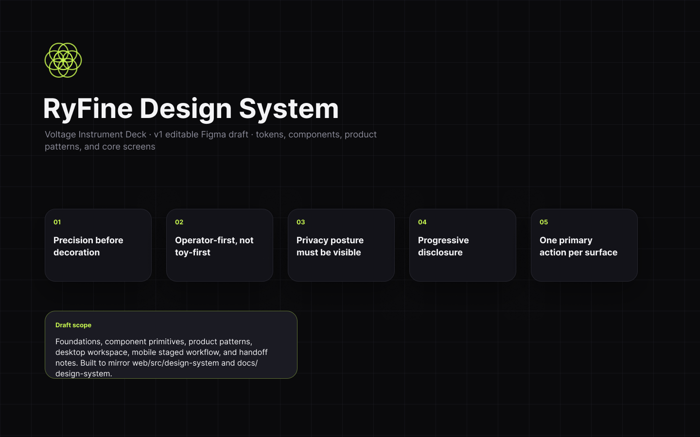

NIKHIL KHEDKAR / POST-INTERVIEW NOTE
For Heather Page
A direct follow-up
I design the system around the outcome.
A post-interview note for Heather Page
Across these projects, I move between people, workflows, interfaces, AI behaviour, handoffs, and the points where a person needs to review or stop the system.
Heather showed particular interest in the Boardy work during our live conversation. This page adds the context that a time-limited interview could not hold; it is a recollection, not written follow-up evidence.
Featured case
Boardy
Exploring what comes after the superconnector
I started with Boardy because it was asking an interesting question about persistent context and connection. Then I started asking a harder one: what remains defensible as personal agents get better at holding context and acting across services?
The work that followed was not an attempt to pretend I had rebuilt Boardy. I explored the product around it — how to make the idea legible, how an existing personal agent might access it, where human approval should stop autonomy, and whether Boardy’s introduction workflow could complement Symphony’s follow-up workflow. The animation is my presentation layer around that investigation, not a claim about Boardy’s own product.
A note from Boardy
Product/participant statement, included as attributed context and not a neutral customer reference.
The note describes an animated performance rig with independent blink, gaze, mouth movement, and viseme lip sync. It also describes a Google Meet scaffold, episode pages with a speaker-gated cue track, and a boardy4age CLI that creates a Gmail draft for human review before send.
Boardy itself
The external AI product/service.
Nik’s work around Boardy
Investigation, access, workflow, and approval boundaries.
BoardyAnimated
Presentation and interaction layer around the investigation.
My approach
Outcome → workflow → evidence → human control
A simple thread I use across different problems, from zero to one to what comes next.
-
01
Outcome
Start with the real problem and a clear job to be done.
-
02
Workflow
Design the system people actually work inside, not just the interface.
-
03
Evidence
Make progress, uncertainty, and failure visible.
-
04
Human control
Keep people informed, accountable, and able to stop or review the system.
Additional cases
Four ways I apply the same thinking.
Different problems, same approach. Turn complexity into clarity, design for real use, and make the thinking observable.
Built workflow
LTB Buddy
AI workflow design where trust, evidence, escalation, and human authority are part of the UX.
A built/public-beta workflow for tenant evidence and guided self-help, designed with human review boundaries. Its retrieval evaluation measures retrieval quality, not legal correctness.
Evidence trail
Project overview, decisions and risks, RAG evaluation documentation, and the current product surface.

Product and interface craft
RyFine
Turning AI capability into a clear, usable experience with a coherent design system.
A built browser product for prompt refinement with repo context, provider choice, and local-first/BYOK paths. The Figma cover is a real design artifact; it is not proof that every principle or screen is shipped in the live product.
Evidence trail
Design-system documentation, the inspected local export, and the current web product remain separate sources of evidence.
Observable experiment
Code2Motion
Making a difficult technical idea tangible and testable through interaction.
A repo-backed interactive-art product thesis with substantial implementation: PlayRoom is the audience surface, ToyMaker is the creator surface, and a c2merse moves between creation and distribution. Current runtime and operational caveats keep this work observable and experimental, not a clean production release.
Evidence trail
Product thesis, current handoff, and the public feed/showroom surface.
Development-ready product
EasyBuddy
Mobile-first operational assistance for jobs, training, voice, retrieval, and technician support.
A development-ready React/Vite workflow for automotive technicians: jobs, training, a voice-capable AI assistant, and knowledge-base operations in one mobile-first app. The documented local posture has authentication disabled by default, so this is not presented as a verified production deployment.
Evidence trail
Quick reference, app source and scripts, and a Teambotics product listing as documented context rather than app observability.
Project status
Make the evidence legible.
These labels describe what kind of support a claim has, not how impressive the claim sounds.
Implemented in a checked repository or working artifact.
Seen in a live product, local run, or rendered surface.
Described in project documentation or a design artifact.
A prototype or investigation used to learn what should happen next.
A direction or relationship not represented as shipped.
Checked against a named source or surface during this build.